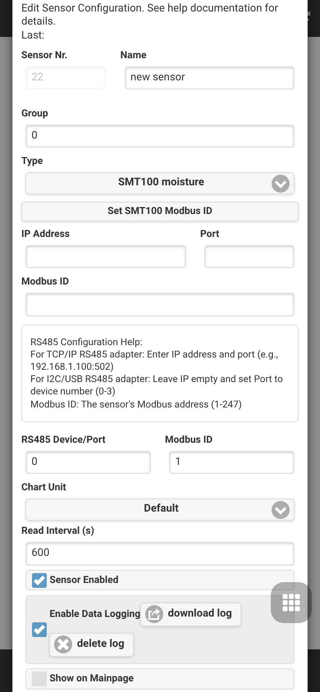

Integração do Gateway Zigbee
O OpenSprinklerPro possui capacidades nativas de coordenação Zigbee diretamente na placa do ESP32-C5. A solução de chip único ESP32-C5 suporta Wi-Fi 6 de banda dupla de 2.4 GHz, Bluetooth 5 (LE) e 802.15.4 (Zigbee 3.0 / Thread).
Utilizando a variante Zigbee do firmware, o seu controlador OpenSprinkler funciona como um coordenador Zigbee completo. Ele pode ser emparelhado com sensores de automação residencial, válvulas inteligentes, sondas de umidade do solo e monitores de temperatura para adaptar as suas programações de irrigação com base nas condições locais em tempo real.
📸 Fluxo de Configuração Guiado
Este guia passo a passo demonstra como configurar o modo de rádio, emparelhar dispositivos Zigbee e mapear os seus atributos para sensores analógicos.
Passo 1: Configuração do Modo de Rádio
Primeiro, verifique se o seu controlador ESP32-C5 está configurado para o modo de rádio correto. Por padrão, o ESP32-C5 pode operar em vários modos. Acesse as configurações de modo através do menu lateral em Setup ESP32 Mode.

Para usar o Zigbee, ative o modo Zigbee Gateway / Coordinator. Isso inicializa o rádio nativo 802.15.4 para gerenciamento de canais Zigbee, roteamento de dispositivos e formação da rede.
Passo 2: Associação e Emparelhamento de Dispositivos
Assim que o modo Zigbee estiver ativo, poderá acessar a página do ZigBee Gateway a partir do menu lateral. Esta página permite controlar o tempo de associação e gerenciar os dispositivos físicos registrados.

- Clique em Permit Join (geralmente por 60 segundos) para abrir a rede para novos dispositivos.
- Coloque o seu dispositivo Zigbee (por exemplo, válvula inteligente GIEX, sensor de solo Tuya ou sensor de temperatura Xiaomi) no modo de emparelhamento (geralmente mantendo pressionado o botão de associação por 5 segundos).
- O dispositivo será detectado, receberá um endereço curto e exibirá o seu endereço IEEE de 64 bits, tipo de dispositivo e qualidade de sinal (LQI).
Passo 3: Opções Gerais de Integração
Em Edit Options → Integrations, certifique-se de que os alertas Zigbee e as vinculações coordenadas estejam ativos. Isso permite que o controlador faça a ponte entre os sinais externos e o circuito de agendamento local.

Passo 4: Configuração de Multi-Sensores e Calibração
Para usar os dados dos sensores para ajustes de programas, aceda a Analog Sensor Configuration a partir do menu do rodapé. Este painel exibe todos os sensores lógicos ativos, as suas vinculações físicas e o estado da bateria.

Passo 5: Adicionando/Editando um Sensor Zigbee
Clique em Add Sensor (ou edite um sensor existente) para mapear um atributo específico do dispositivo Zigbee (como porcentagem de umidade do solo ou temperatura) para um slot de sensor analógico.

Neste editor, poderá: - Atribuir um Nome facilmente reconhecível ao sensor. - Escolher o Tipo de Sensor (por exemplo, umidade, temperatura, bateria, etc.). - Selecionar o Dispositivo de Origem (Source Device) na lista suspensa dos nós Zigbee emparelhados. - Definir offsets de calibração personalizados e limites de disparo.
🛠️ Dispositivos Suportados e Detalhes Técnicos
O firmware interno suporta clusters padrão Zigbee 3.0: - 0x0402: Medição de Temperatura (Tuya, Xiaomi, Sonoff) - 0x0405: Umidade Relativa / Umidade do Solo (GIEX, Tuya, Moes) - 0x0001: Configuração de Energia (relato de porcentagem de bateria)
Mapeamento de Dispositivos Multicanal
Ao utilizar válvulas inteligentes multicanal complexas (como a válvula de irrigação de saída dupla GIEX GX02), o coordenador divide os estados das válvulas individuais e os canais de telemetria em subdispositivos lógicos distintos. Isso garante que cada zona possa ser acionada ou ajustada de forma totalmente independente.
Coexistência de Rádio
O ESP32-C5 gerencia simultaneamente varreduras BLE, tráfego Wi-Fi 6 e pacquets Zigbee 802.15.4. Durante as varreduras de sensores BLE, o protocolo de Arbitragem de Tráfego de Pacotes (PTA) do Zigbee reduz momentaneamente a prioridade dos endpoints Zigbee para evitar colisões de rádio e perda de pacotes, restaurando a prioridade total de imediato assim que a varredura ativa é pausada.